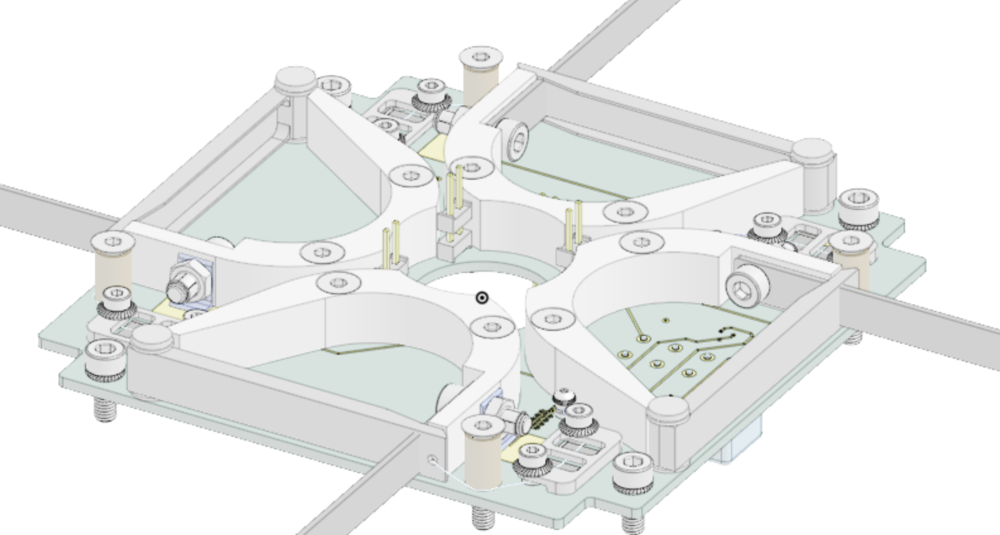

Aug 2024 - May 2025
Harbinger 3U CubeSat
Communications Team, Utah Tech University
Currently Working on Designing and Manufacturing a fully Functioning, Autonomous, Earth-Based Uplink/Downlink System.
View ProjectShowcasing the best of my Mechanical Engineering Projects, Designs, Advancements, and Manufacturing Innovations.
Hi! My name is Adam DiMaio—a passionate Mechanical Engineer specializing in Design, Manufacturing, and Finite Element Analysis. I Thrive on Transforming Ideas into Innovative Solutions.
I am proud to have passed the NCEES Fundamentals of Engineering (FE) Mechanical Exam, a significant milestone in my journey to becoming a licensed Professional Engineer (PE). This certification demonstrates my foundational knowledge in mechanical engineering principles and practices.
Currently Working on Designing and Manufacturing a fully Functioning, Autonomous, Earth-Based Uplink/Downlink System.
View ProjectConducted Research and Technical Analysis, contributing to Hazard Log Analysis and Contractor Integration to Enhance Operations.
View ProjectWorked with the Infrastructure Design Team on the Pioneering US High-Speed Train Project, Assisting in Ideal Platform Layout, Creating a Rail Neutral Temperature Document, and Creating a Train TimeTable.
View Project
Collaborated with an Interdisciplinary Team to Create a Wearable Medical Device with the aim of Improving Recovery for Knee Reconstruction Patients—Utilizing CAD, Coding, and Prototyping.
View ProjectDesigned and Implemented a Successful Propulsion System using Fluid Mechanics, FEA, and Machinery—Achieving approximately 218.62 N of Thrust from the Propeller.
View ProjectCreated a Mechatronic Arcade Game Integrating Arduino Programming, 3D Printing, and Laser Cutting for an Interactive Gameplay Experience.
View ProjectDeveloped an Interactive Mini Golf Experience using Arduino and a Laser-Triggered Fog Machines, Collaborating with a Team of Engineering Students.
View Project